Still There
The beauty in overlooked corners — quiet places that remain, waiting to be noticed. Captured on film, these images find grace in the spaces we walk past every day.
click the image to zoom in
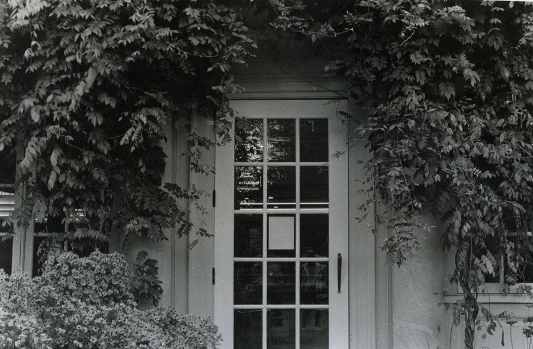
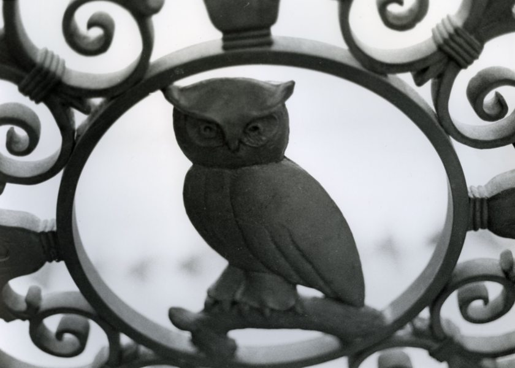
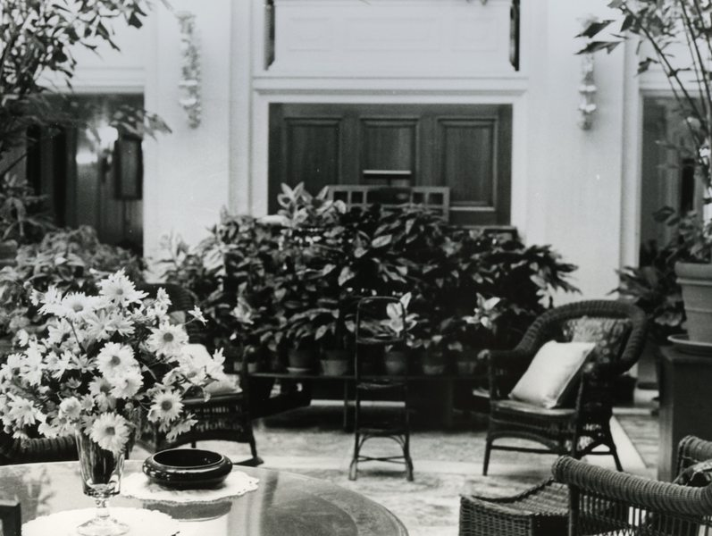
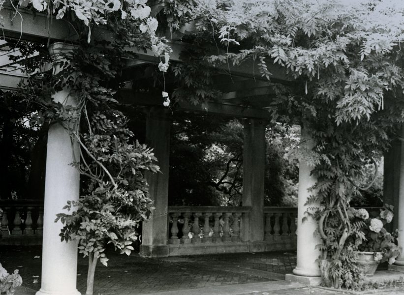
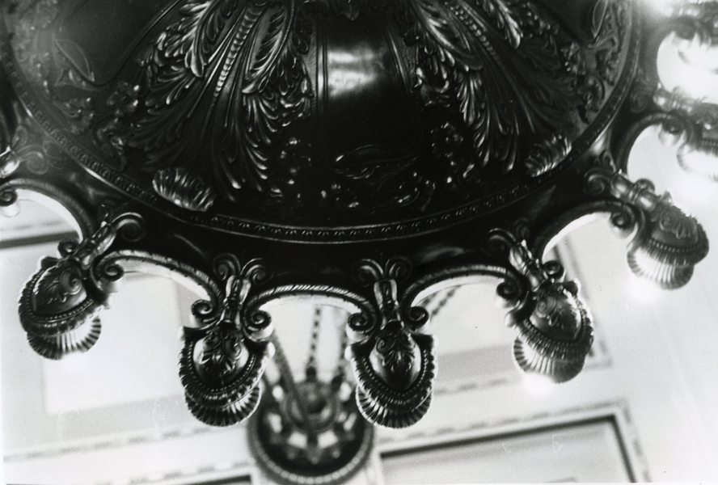
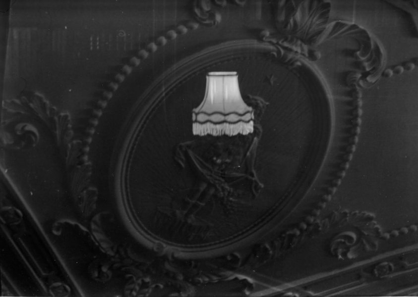
drag or scroll to see more →
Look Both Ways
Signs demand attention, yet we never look. An exploration of visibility, reflection, and where our gaze actually falls.
click the image to zoom in
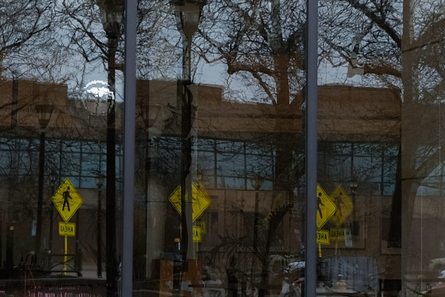
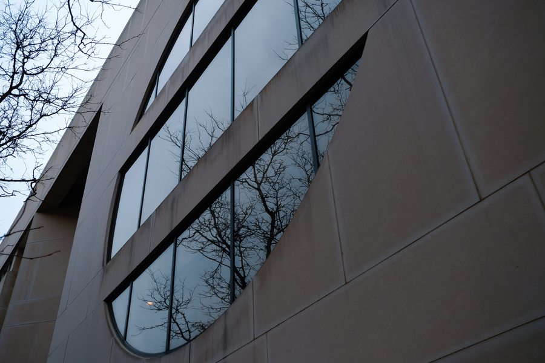
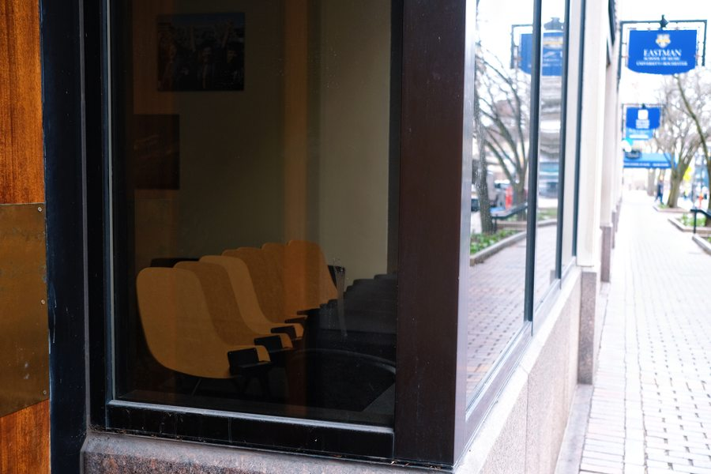
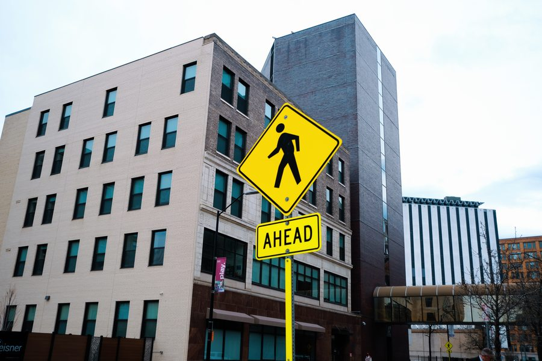
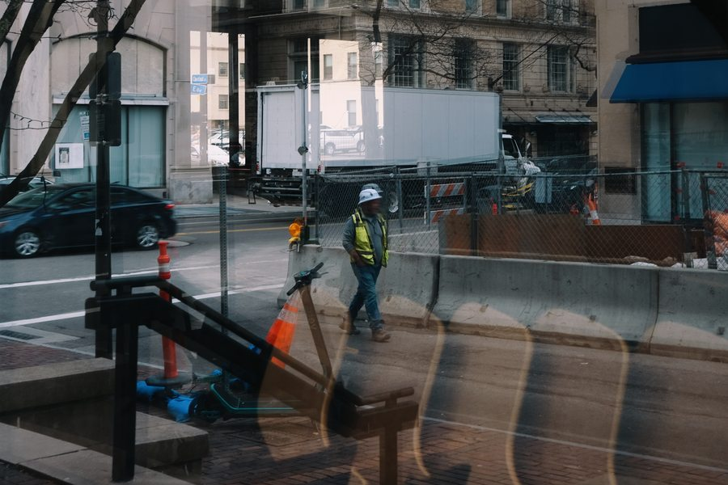
drag or scroll to see more →
After You
A solo short film exploring the space between human connection and artificial intimacy — what happens when the line between genuine feeling and programmed response begins to dissolve. Directed, produced, and performed by Wendy Wang.
Critical & Visual Thought Award — Honorable Mention